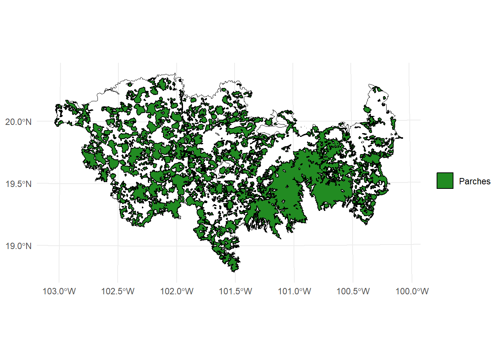
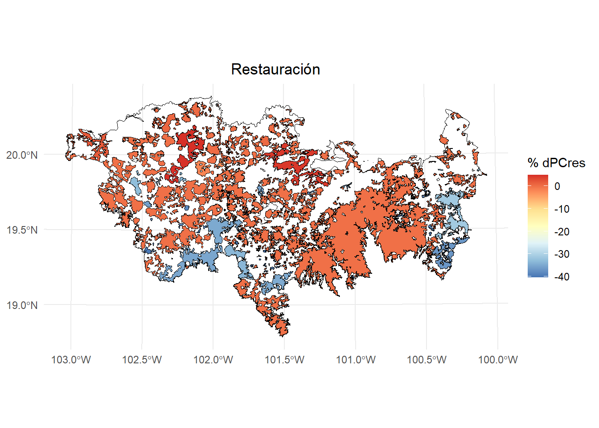
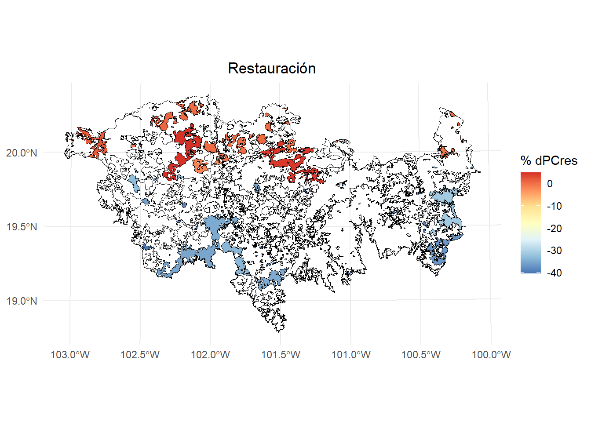

5 Prioridades de Restauración con MK_dPCIIC()
Con la función MK_dPCIIC() podemos obtener la contribución potencial de un parche que será restaurado. Usaremos los argumentos:
-
restoration = NULL. Vector o nombre de columna que indica si cada nodo es existente (1) o propuesto para restauración (0). Si esNULL, se considera que todos los nodos existen. -
onlyrestor = FALSE.Lógico. SiTRUE, solo se calcularán métricas relacionadas con restauración.
Continuamos trabajando con el vector con 404 parches/nodos en el eje Neovolcánico de México. Para generar un escenario hipotético de restauración, seleccionaremos aleatoriamente 100 parches para restaurar.
library(ggplot2)
library(sf)
library(terra)
library(raster)
library(Makurhini)
library(RColorBrewer)
habitat_nodes <- read_sf("C:/.../habitat_nodes.shp")
nrow(habitat_nodes)
paisaje <- read_sf("C:/.../paisaje.shp")#> [1] 404
ggplot() +
geom_sf(data = paisaje, aes(color = "Study area"), fill = NA, color = "black") +
geom_sf(data = habitat_nodes, aes(color = "Parches"), fill = "forestgreen", linewidth = 0.5) +
scale_color_manual(name = "", values = "black")+
theme_minimal() +
theme(axis.title.x = element_blank(),
axis.title.y = element_blank())
set.seed(10) #Para que seleccionen los mismos parches que yo
#Seleccionar de forma aleatoria a 100 de estos parches para restaurar
parches_restauracion <- sample(1:nrow(habitat_nodes), 100)
parches_restauracion
#> [1] 137 330 368 72 211 344 271 143 403 24 13 351 392
#> [14] 110 263 231 155 342 338 285 385 377 92 50 365 154
#> [27] 101 33 135 379 158 324 93 114 88 307 182 242 288
#> [40] 267 335 382 347 42 334 394 217 200 144 26 345 209
#> [53] 48 151 15 395 317 132 227 270 35 266 74 58 167
#> [66] 398 31 378 337 109 39 118 89 18 361 254 192 249
#> [79] 90 234 251 328 4 63 20 321 224 241 176 94 148
#> [92] 402 346 27 80 404 207 298 119 401Creamos un nuevo campo llamado restauracion (puede ser cualquier nombre) con valores de 1 que representan parches que existen en el paisaje:
habitat_nodes$restauracion <- 1Asignamos un valor de 0 a los parches seleccionados para restaurar (no existen en el paisaje inicialmente y serán restaurados.
habitat_nodes$restauracion[parches_restauracion] <- 0Aplicamos la función MK_dPCIIC(). En este ejemplo usaremos el índice PC y una probabbilidad de 0.5 bajo un umbral de distancia de 10 km.
PCrestauracion <- MK_dPCIIC(nodes = habitat_nodes,
attribute = NULL,
area_unit = "ha",
distance = list(type = "edge", keep = 0.1),
LA = NULL,
restoration = "restauracion",
onlyrestor = TRUE,
metric = "PC",
probability = 0.5,
distance_thresholds = 10000,
intern = TRUE) #10 km
#> Estimating PC index. This may take several minutes depending on the number of nodes
#>
|
| | 0%
|
|==================================================| 100%
#> ■■■■■■■■■■■■■■■ 45% | ETA: 2s
#>
#> Done!
PCrestauracion
#> Simple feature collection with 404 features and 3 fields
#> Geometry type: POLYGON
#> Dimension: XY
#> Bounding box: xmin: -108954 ymin: 2025032 xmax: 202330.2 ymax: 2198936
#> Projected CRS: NAD_1927_Albers
#> First 10 features:
#> Id restauracion dPCres geometry
#> 1 1 1 0.00000 POLYGON ((54911.05 2035815,...
#> 2 2 1 0.00000 POLYGON ((44591.28 2042209,...
#> 3 3 1 0.00000 POLYGON ((46491.11 2042467,...
#> 4 4 0 -36.02491 POLYGON ((54944.49 2048163,...
#> 5 5 1 0.00000 POLYGON ((80094.28 2064140,...
#> 6 6 1 0.00000 POLYGON ((69205.24 2066394,...
#> 7 7 1 0.00000 POLYGON ((68554.2 2066632, ...
#> 8 8 1 0.00000 POLYGON ((69995.53 2066880,...
#> 9 9 1 0.00000 POLYGON ((79368.68 2067324,...
#> 10 10 1 0.00000 POLYGON ((23378.32 2067554,...Se crea la columna dPCres con la importancia relativa del parche para mejorar la conectividad del paisaje al aparecer cuando es restaurado. Los valores van de -100 a 100, debido a que su contribución puede incluso ser negativa, es decir, disminuye la conectividad global al restaurarlo.
ggplot() +
geom_sf(data = paisaje, aes(color = "Study area"), fill = NA, color = "black") +
geom_sf(data = PCrestauracion, aes(fill = dPCres), color = "black", size = 0.1) +
scale_fill_distiller(
palette = "RdYlBu",
direction = -1,
name = "% dPCres"
) +
theme_minimal() +
labs(
title = "Restauración",
fill = "% dPCres"
) +
theme(
legend.position = "right",
plot.title = element_text(hjust = 0.5)
)
Veamos solo los parches de restauración
PCrestauracion2 <- PCrestauracion[PCrestauracion$restauracion == 0,]
ggplot() +
geom_sf(data = paisaje, aes(color = "Study area"), fill = NA, color = "black") +
geom_sf(data = habitat_nodes, aes(color = "Patches"), fill = NA, color = "black") +
geom_sf(data = PCrestauracion2, aes(fill = dPCres), color = "black", size = 0.1) +
scale_fill_distiller(
palette = "RdYlBu",
direction = -1,
name = "% dPCres"
) +
theme_minimal() +
labs(
title = "Restauración",
fill = "% dPCres"
) +
theme(
legend.position = "right",
plot.title = element_text(hjust = 0.5)
)
Si desactivamos onlyrestor entonces estima los otros valores delíndice de conectividad (i.e., dPC, intra, flux y connector).
PCrestauracion <- MK_dPCIIC(nodes = habitat_nodes,
attribute = NULL,
area_unit = "ha",
distance = list(type = "edge", keep = 0.1),
LA = NULL,
restoration = "restauracion",
onlyrestor = FALSE,
metric = "PC",
probability = 0.5,
distance_thresholds = 10000,
intern = FALSE) #10 km
PCrestauracion
#> Simple feature collection with 404 features and 7 fields
#> Geometry type: POLYGON
#> Dimension: XY
#> Bounding box: xmin: -108954 ymin: 2025032 xmax: 202330.2 ymax: 2198936
#> Projected CRS: NAD_1927_Albers
#> First 10 features:
#> Id restauracion dPC dPCintra dPCflux
#> 1 1 1 0.0128564 0.0000006 0.0128558
#> 2 2 1 0.0332059 0.0000037 0.0332022
#> 3 3 1 1.6831849 0.0093299 1.6665804
#> 4 4 0 0.0184037 0.0000011 0.0184026
#> 5 5 1 0.0285162 0.0000026 0.0285136
#> 6 6 1 0.0040938 0.0000001 0.0040937
#> 7 7 1 0.0069481 0.0000001 0.0068704
#> 8 8 1 0.0088543 0.0000003 0.0088540
#> 9 9 1 0.0369150 0.0000032 0.0331109
#> 10 10 1 5.5556530 0.0665892 4.4246468
#> dPCconnector dPCres geometry
#> 1 0.000000e+00 0.00000 POLYGON ((54911.05 2035815,...
#> 2 0.000000e+00 0.00000 POLYGON ((44591.28 2042209,...
#> 3 7.274621e-03 0.00000 POLYGON ((46491.11 2042467,...
#> 4 0.000000e+00 -36.02491 POLYGON ((54944.49 2048163,...
#> 5 0.000000e+00 0.00000 POLYGON ((80094.28 2064140,...
#> 6 5.309968e-08 0.00000 POLYGON ((69205.24 2066394,...
#> 7 7.758334e-05 0.00000 POLYGON ((68554.2 2066632, ...
#> 8 0.000000e+00 0.00000 POLYGON ((69995.53 2066880,...
#> 9 3.800919e-03 0.00000 POLYGON ((79368.68 2067324,...
#> 10 1.064417e+00 0.00000 POLYGON ((23378.32 2067554,...